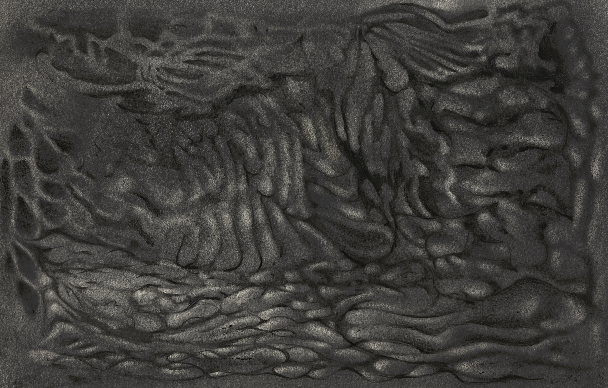
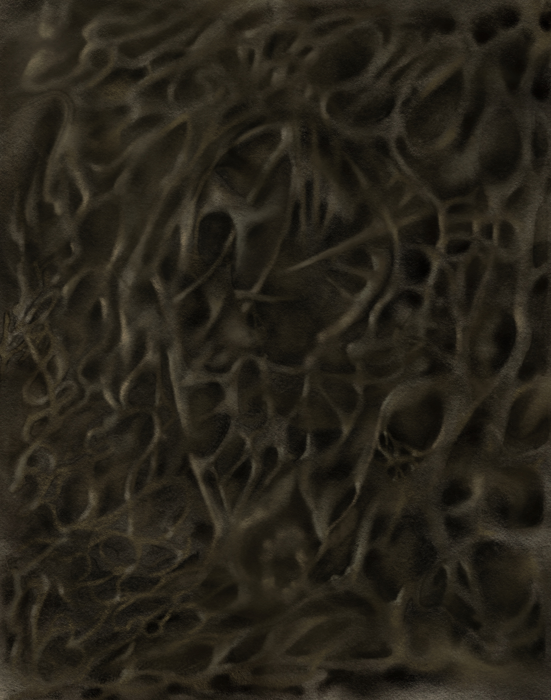
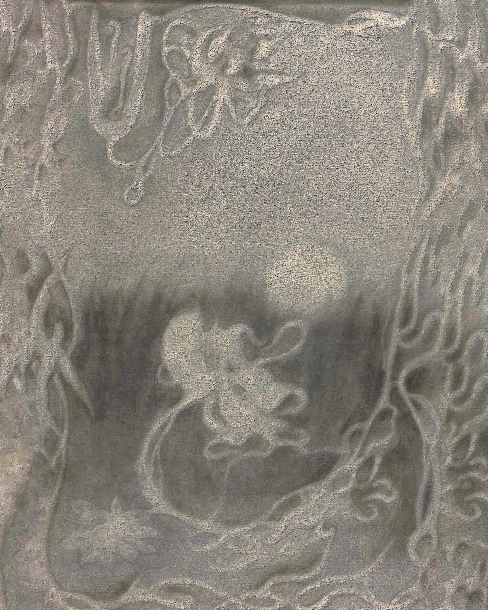
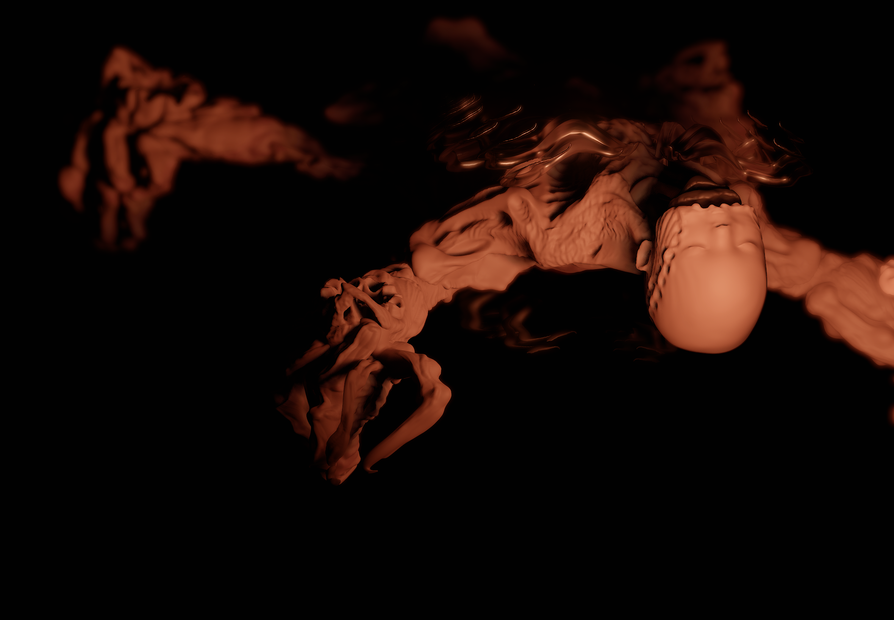
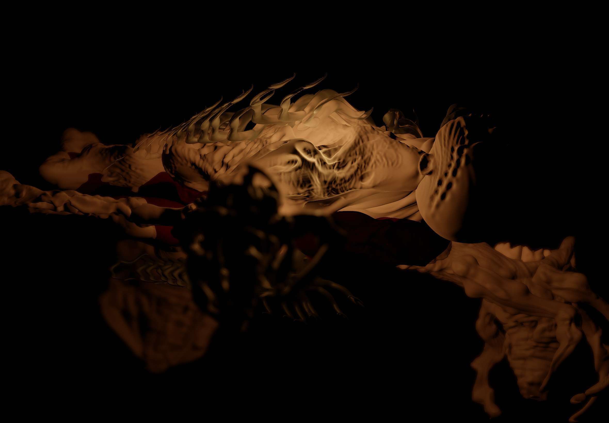

Artist working across live-coded sound, data sonification, soldered-metal sculpture and drawing — moving deliberately between unlike media to make distance touchable, turning what reaches us only as abstraction into forms a body can meet directly.
2026 —Disturbed Ground (∄ × CTM Festival), featuring Heavy Waters, received the
VIA – VUT Indie Award for Best Experiment, Reeperbahn Festival, Hamburg.
→ read
A performance about the life of Ukraine's rivers — from mythical beings and sources of life, to industrial infrastructure reshaped in the Soviet era, to landscapes now carrying the contamination of war. Sound composed from environmental data and live-coded systems meets a visual language drawn from folklore, scientific research and ecological documentation.
Commissioned within Disturbed Ground, a collaboration between Kyiv's ∄ and CTM Festival supported by the Goethe-Institut Co-production Fund.
A full sonification of Ukraine's state water-quality record. Every measured exceedance of permitted pollutant levels becomes an audible event, so that seven years of numbers kept in a registry become something a listener can sit inside for their whole duration.
Sonic Interventions — with Genevieve Murphy, TIME BASED, Scotland, 2025
Drawings
Charcoal on paper, 2024–2025

lovelorn habitat, charcoal, 2025

alive copper clocker, charcoal, 2025

keep it if u want to, charcoal, A5, 2024
3D works
Digital sculpture, 2025–2026 · in progress
biomech bolid (2026) and baby-drone (2025), an unfinished game project.
biomech bolid, 3D render, 2026, wip


baby-drone, game project, 2025, unfinished
About
Her practice sits at the intersection of algorithmic systems and gestural intuition. She creates live-coded electronic music in SuperCollider and TidalCycles, where composition emerges through code written in real time, alongside tactile, hand-driven processes — charcoal and pencil drawing, hand-soldered metal objects. The same hand and technical vocabulary she developed building FPV drones during an earlier R&D role in military aerospace now moves between soldered tin sculpture and large-scale sonifications of Ukraine's contaminated rivers — redirecting a wartime skill toward the body and the watershed.
Her work has been presented at CTM Festival (Berlin), Ujazdowski Castle Centre for Contemporary Art (Warsaw), Kantine am Berghain, EXPO 2025 Osaka and the Goethe-Institut Kyiv. In 2026 Disturbed Ground, the programme that commissioned Heavy Waters, received the VIA – VUT Indie Award for Best Experiment.
Full CV →